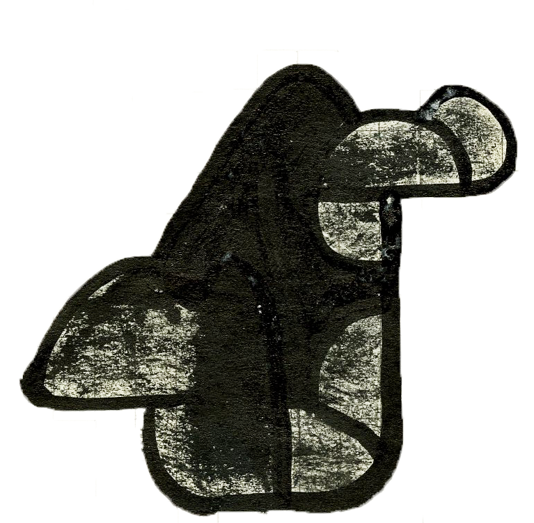
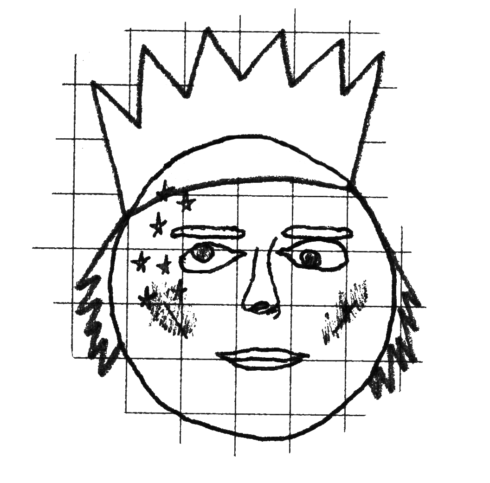
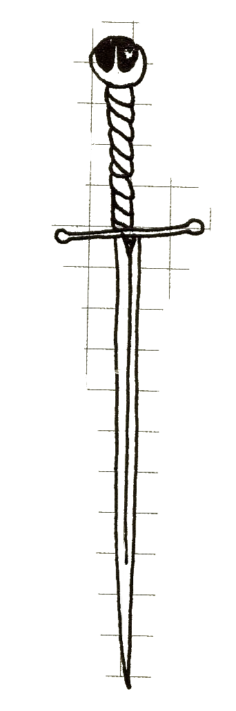

Do you know about Charles?

Ohh... Ok well I'll tell you about his sword.

So this is King Charles.
King Charles was a really good looking guy but you see, when he was young he discovered how to make funny faces and loved it. Because he liked it so much Charles tried to cross his eyes for as long as possible until one day he fell down while he was walking with his eyes crossed (ridiculous, I know) and that broke his optical nerve which left him with permanent cross eyes. All the other Kings started making fun of him and to try and teach the mean Kings a lesson, Charles wanted to get a sword to fight them. This was harder than he though because of his terrible eye sight until one day he heard of a misterious creature that live deep deep in the code regions of Brooklyn.
So, after years and years of research and word of mouth, King Charles finally found something! Somehow a talking shadow (Bet you didn't know they existed) decided it would help him for it had seen this magic magician once before and they were kinda homies. What would the price be Charles was thinking but all the shadow wanted in return was insta credit so Charles agreed.
So Charles took his new whip and drove for days until he finally arrived deep in the code region of Pre-historic Brooklyn. His long lasting dream might finally come to be. So after posting a few pics with the hashtag magician the unknown entity appeard. It told him in it's most robotic voice that to weild this magic sword, Charles would have to learn jQuery and spread the word throughout his kingdom and all the ones around him, to which Charles gladly agreed. The entity then stole a strand of the under the king's crown and ate it. Imediately after that he started to squeeze his body until...
The sword poped out one of it's folds!
So after years and years of searching Charles finally had it.
A slightly skewed sword to compensate for his crosseyes.
The end :)
